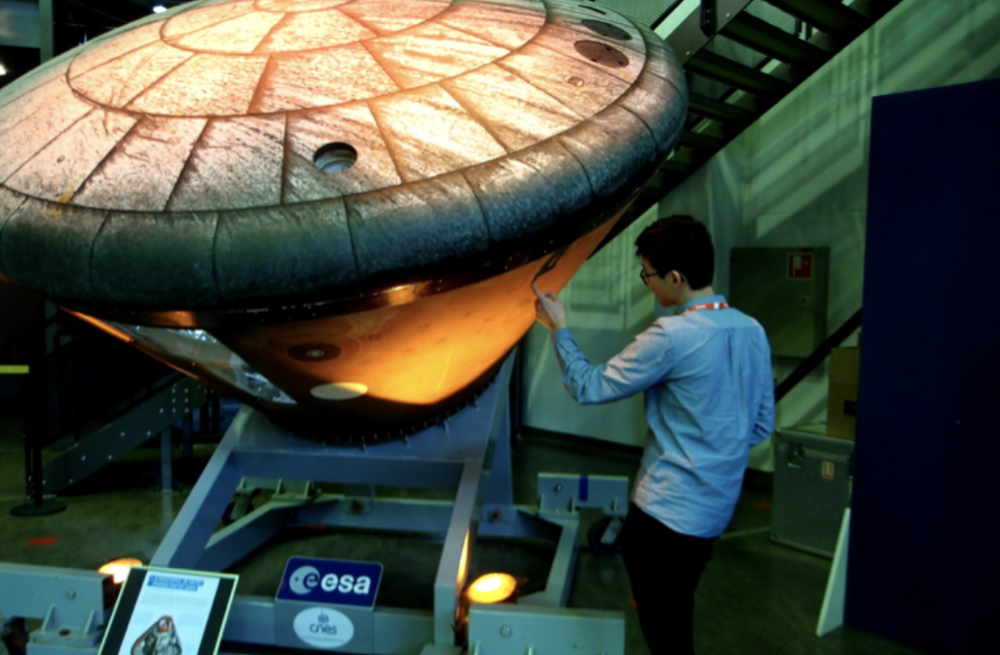

Fysik og matematik linjen er for eleven med interesse indenfor universet, naturlove og matematiske principper. Her arbejdes der med de to fag gennem eksperimenter og andre spændende undersøgelser. Moderne IT tilgange, naturlove, energier, formler og andre videnskabelige fænomener vil blive uddybet og undersøgt på denne linje. Studieretningen er for dig som har interesse i grundlaget for udviklingen af vores forståelse af Universets historie. Her er der plads til at fordybe sig i naturlovene og forundres over både dagligdags- og ekstraordinære fænomener. Centralt i undervisningen står det innovative i det eksperimentelle arbejde i sciencefagene. Her vil du blive udfordret til kreativt at udforske naturens love og anvende dem i flere programmeringsforløb. Med vores eksperimentelle udstyr vil der blive åbnet for nye måder at lære naturvidenskab på. Du vil komme til at arbejde med moderne IT tilgange, både når du tilegner dig viden inden for de centrale fag matematik, fysik og kemi, og når du selv udforsker naturen ud fra dine egne udtænkte eksperimenter. Du vil få en ny forståelse for din omverden og for den indflydelse naturvidenskaben har på dig og samfundet. Med Fysik A i studieretningen kommer du tidligt til at arbejde med komplekse problemstillinger hvor matematiske redskaber er centrale og du vil oparbejde kompetencer til at løse opgaver på videregående naturvidenskabelige uddannelser.